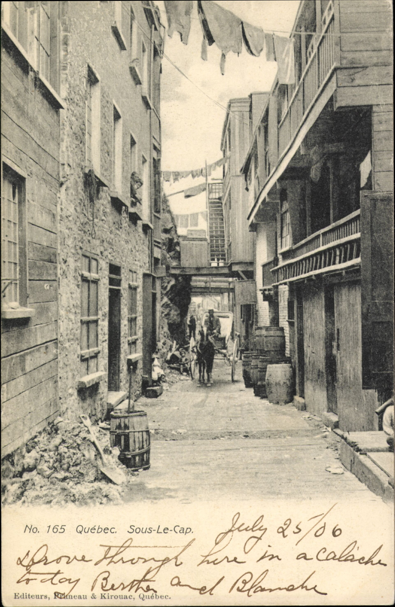

Does AI getL’IA parleQuébécois?québécois ?
Some do. The strongest model answered 96 out of 100 on Quebec expressions and words. The models you can run on your own computer, up to 33 billion parameters, scored no more than 54.Certaines, oui. Le modèle le plus fort a répondu juste à 96 questions sur 100 sur les expressions et les mots du Québec. Les modèles qu’on peut exécuter sur son propre ordinateur, jusqu’à 33 milliards de paramètres, ont obtenu 54 au maximum.
Three wordsTrois mots
- COLE
- A set of 23 French tests built by researchers. Two of them are about Quebec expressions and words.Un ensemble de 23 tests en français créé par des chercheurs. Deux portent sur les expressions et les mots du Québec.
- BenchmarkBanc d’essai
- A test that asks every model the same questions, so their scores can be compared.Un test qui pose les mêmes questions à chaque modèle, pour que leurs scores soient comparables.
- ModelModèle
- An AI program that reads and writes text, like the one behind a chatbot.Un programme d’IA qui lit et écrit du texte, comme celui derrière un robot conversationnel.
96
out of 100: the highest score, Claude Opus 4.sur 100 : le score le plus élevé, Claude Opus 4.
How well do they know Quebec words?Connaissent-ils les mots du Québec ?
Each model got the same questions: match a Quebec expression or word with its meaning.Chaque modèle a reçu les mêmes questions : associer une expression ou un mot du Québec à son sens.
Guessing at random scores 11. The two smallest models score barely higher.Le hasard obtient 11. Les deux plus petits modèles obtiennent à peine plus.
2 ofsur 23tests are about Quebec French.tests portent sur le français québécois.
What this does not tell youCe que ce score ne dit pas
It is not the whole of Quebec French.Ce n’est pas tout le français québécois.
Two of the 23 tests are about Quebec. The other 21 test French in general.Deux des 23 tests portent sur le Québec. Les 21 autres testent le français en général.
It says nothing about cost or speed.Il ne dit rien du coût ni de la vitesse.
A high score does not tell you the price, the delay or where your data goes.Un score élevé n’indique ni le prix, ni le délai, ni où vont vos données.
It is a snapshot.C’est un instantané.
Results use one protocol, a single snapshot. Newer models are not in yet.Les résultats suivent un seul protocole et un seul instantané. Les modèles plus récents n’y sont pas encore.
It may not match your job.Il ne correspond pas forcément à votre tâche.
The tests are short, scored questions, not conversations. A model can do well here and still write badly for you.Les tests sont de courtes questions notées, pas des conversations. Un modèle peut bien réussir ici et mal écrire pour vous.
Want the details?Envie de détails ?
Compare two models side by side, or read how the scores are computed.Comparez deux modèles côte à côte, ou lisez comment les scores sont calculés.
Compare two modelsComparer deux modèles Read the article pageLire la page de l’article
Two more ways to lookDeux autres façons de regarder
Quebec against the restLe Québec contre le reste
Claude Opus 4 averages 95.6 on the two Quebec tests and 70.3 on the other French tests. Two tests are few, so read the gap as a hint.Claude Opus 4 obtient en moyenne 95,6 sur les deux tests québécois et 70,3 sur les autres tests en français. Deux tests, c’est peu : lisez l’écart comme un indice.
On a yes-or-no test about Quebec sentences, guessing scores 49. Claude Opus 4 scores 82.Sur un test par oui ou non sur des phrases québécoises, le hasard obtient 49. Claude Opus 4 obtient 82.